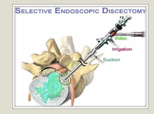
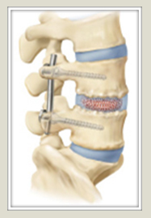
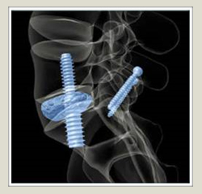

State-of-the-Art Minimally Invasive Spine Surgery in Baton Rouge
— Dr. Kevin P. McCarthy
The Spine Center offers the most recently developed minimally invasive spine surgery techniques. These include endoscopic spinal procedures, percutaneous pain procedures, and percutaneous or minimally invasive fusion surgeries. Most of these techniques are not available in traditional centers. Some of the most recently developed procedures are currently under study by the research team at the Spine Center.
The goal of minimally invasive spine surgery is to obtain the same structural results as traditional open techniques with minimal disruption to the soft tissue that surrounds the spine. As a result, these procedures are able to avoid much of the pain, disability, blood loss, and loss of function that occurs with the more traditional open procedures. Research has confirmed that these techniques result in better clinical outcomes including shorter hospital stay, less use of pain medication, less blood loss and a faster return to function.

Endoscopic spinal surgery allows spinal decompression through a tiny poke in the skin. Disc herniations, bone spurs and other structures compressing or irritating the nerve can be safely removed through a Band-Aid size wound. This is accomplished through the use of an endoscope similar to that used in knee and shoulder arthroscopy. This instrument allows visualization of the inside of the spine on a video monitor. The endoscope has an internal working channel that allows the use of special instruments such as articulating burrs, radiofrequency probes, graspers, and laser devices. Through the use of these tools and the video image, the impinging tissue can be safely removed, shrunk or ablated through a 5mm incision. Endoscopic techniques have been used for years at the Spine Center and continue to be further developed.
Spinal fusion techniques have been used to treat spinal disorders for many years. These surgeries can result in improvement in neurologic function, decreased nerve pain and improved spinal stability. However, there is typically significant pain with a prolonged recovery and rehabilitation after such procedures. This is largely secondary to the damage to the surrounding muscle, tendons, and ligaments that result from the extensive open surgical exposure. Patients can be left with permanent disability and loss of function after these open surgeries.
Minimally invasive spinal fusion can often accomplish the same goals as traditional open surgery but without the damage and disruption to the soft tissue that surrounds the spine. These techniques involve the use of small incisions, special retractors, x-ray guidance, microscopic magnification, and special instruments. The Spine Center specializes in the use of these minimally invasive techniques. Procedures offered include percutaneous fusion, minimally invasive transforaminal interbody fusion, extreme lateral interbody fusion, and the Axial LIF procedure.

Percutaneous fusion is a procedure that is accomplished through several small pokes in the skin. A 360° fusion can be obtained using special techniques and without the required incision and pain typical of an open fusion surgery. Through the small pokes in the skin the disc is entered and removed using special instruments and nerve monitoring. Once the disc is cleared out, a special graft containment device is inserted into the space through a small cannula. This device is then packed slowly with bone through this cannula. As it is packed the device expands until it completely fills the disc space. This allows an interbody fusion. Screws and additional bone graft are placed through additional small pokes in the skin. This allows stabilization and fusion over time. Patients typically are discharged the following day. As a result of the minimally invasive nature of this procedure; significant blood loss, postoperative pain, and hospital stays are all avoided.
 The Axial LIF procedure is a newly developed minimally invasive fusion technique that allows fusion of the lowest or the lower two levels of the low back through a tiny incision. This incision is placed at the base of the buttock far below the waistline. This is cosmetically advantageous and also allows us to avoid any incision on the sensitive muscles of the lower back. This technique has been used at the Spine Center for greater than five years. The Spine Center is currently involved in a multicenter study evaluating this technique. The Axial LIF procedure is a newly developed minimally invasive fusion technique that allows fusion of the lowest or the lower two levels of the low back through a tiny incision. This incision is placed at the base of the buttock far below the waistline. This is cosmetically advantageous and also allows us to avoid any incision on the sensitive muscles of the lower back. This technique has been used at the Spine Center for greater than five years. The Spine Center is currently involved in a multicenter study evaluating this technique.
Minimally invasive TLIF and extreme lateral interbody fusions involve small 2-cm incisions and the use of special retractors. Through this, the disc and impinging tissue are safely removed and a fusion is performed. Special neuromonitoring and x-ray guidance are used to protect the neural tissues during these procedures.
The Spine Center at the Bone and Joint Clinic continues to develop and implement the latest minimally invasive spine techniques. In addition, our facility is actively involved in research evaluating these new techniques. Please visit our website (www.spinecenterbr.com) for further information.
|
Can my workstation cause or increase my neck pain?
— Christina Landry, PA-C
Ergonomics is the evaluation and design of the workplace and the surrounding work environment. Workstation ergonomics is very important in how employees feel physically. If you are positioned at a workstation that is not ergonomically correct this can cause or contribute to neck or upper back pain. The placement of your desk, computer, monitor and keyboard can be adjusted to encourage improved upper back and neck posture. Persistent repetitive movements to one side or constant rotation of the neck and back can aggravate joints and soft tissue causing neck and back pain. Patients can
develop poor posture of the head, neck, and shoulders through repetitive work tasks in a poorly positioned workstation. Most neck pain that is not trauma related has a postural component. If the alignment of the head and neck is not optimal the neck can be predisposed to increased wear and tear and more pain. A common problem with posture is when the neck slants forward placing the head in front of the shoulders. This can easily occur if your computer workstation is not customized to your body.
Here are 4 easy steps to create an ergonomically correct workstation:
1. Adjust chair:
- Push hips as far back as they can go in chair
- Adjust seat height so feet are flat on the floor and thighs are parallel to the floor
- Use inflatable cushions to insure your back is supported
- Adjust armrests so shoulders are relaxed
2. Keyboard:
- Pull up close to keyboard
- Position keyboard directly in front of you
- Adjust keyboard height to make your forearms parallel to floor
- Keep wrist and hands straight
Keep elbows by your side
3. Monitor and telephone:
- Eyes should point directly at top 1/3 of screen
- Sit at least one arms length away from screen
- Position source documents between screen and keyboard using an in-line copy stand
- Place telephone within easy reach
- Use headset for telephone
4. Pauses and breaks:
- Take short 1-2 minute breaks every 30 minutes
- Use correct posture when working and keep moving as much as possible
|
|
|
| |